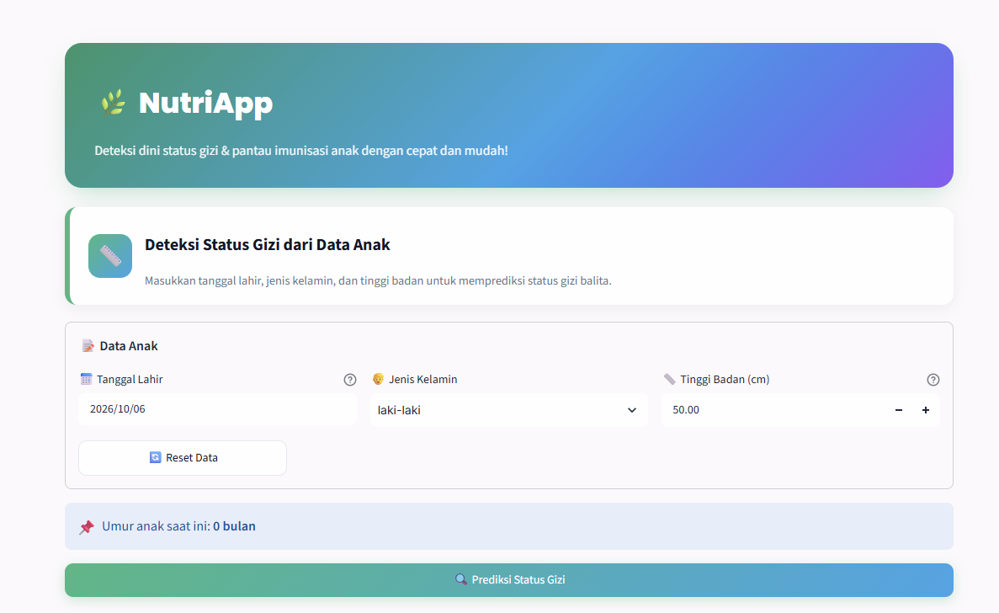
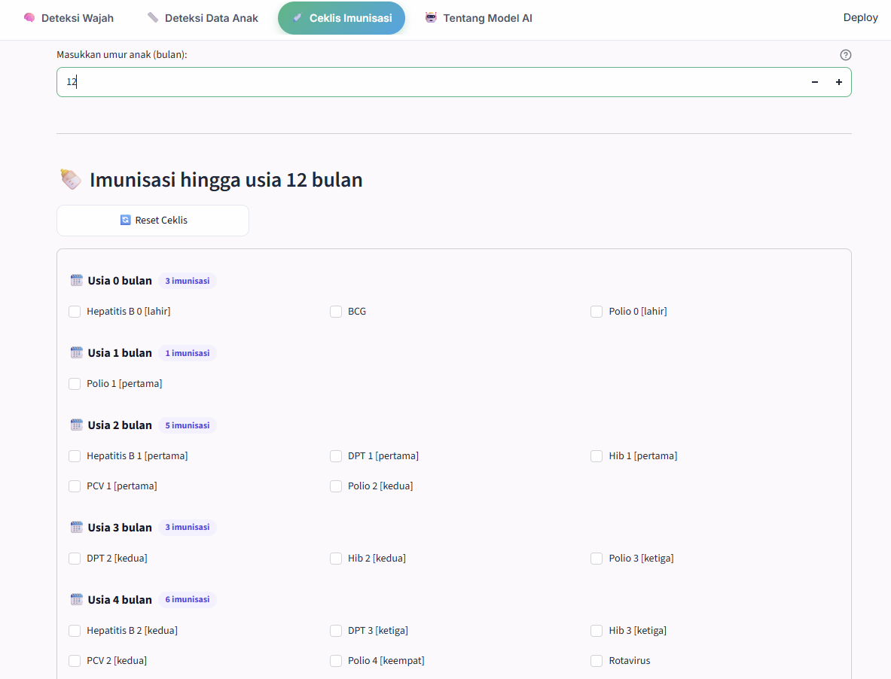
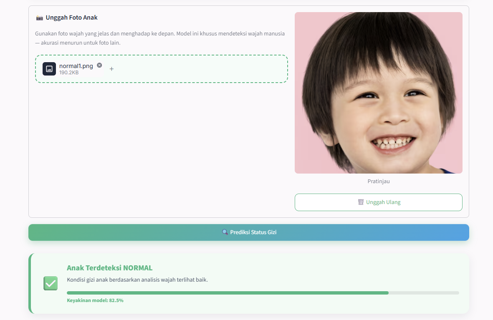
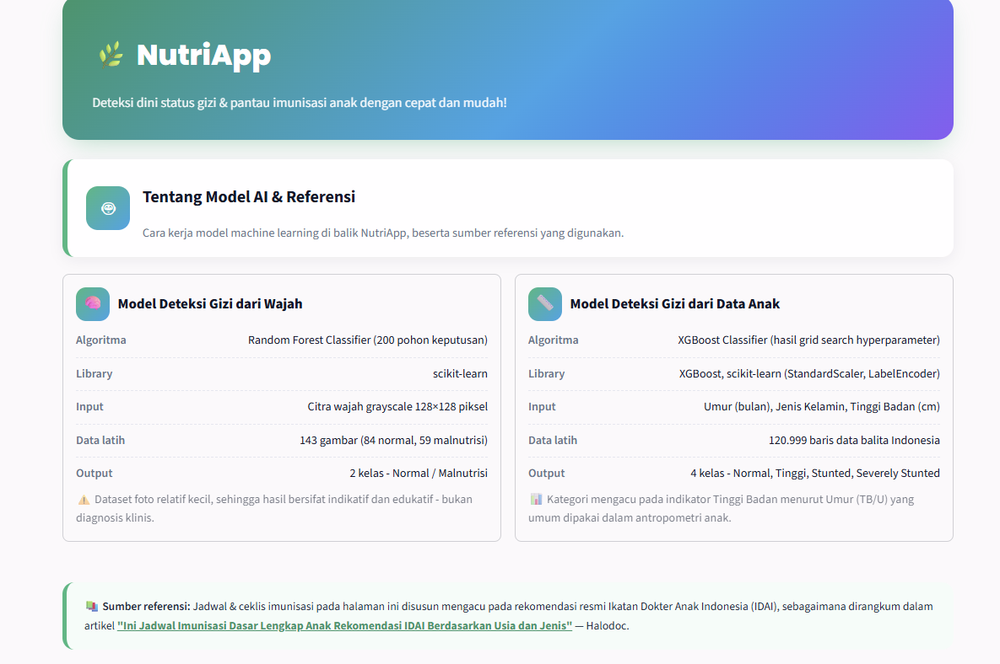

NutriApp
NutriApp tackles early detection of child malnutrition using machine learning and computer vision. As team leader, I collected a custom face-based nutrition dataset (no public dataset was available), trained the models and designed the user interface. The project received excellent feedback and was later refined through a UI/UX refactor for better usability. It showed me how AI can help solve real-world health problems.



